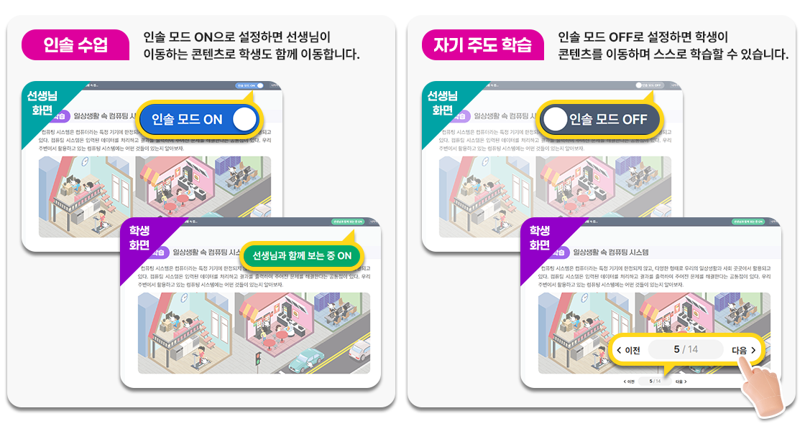
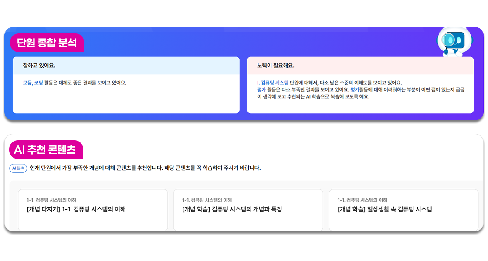
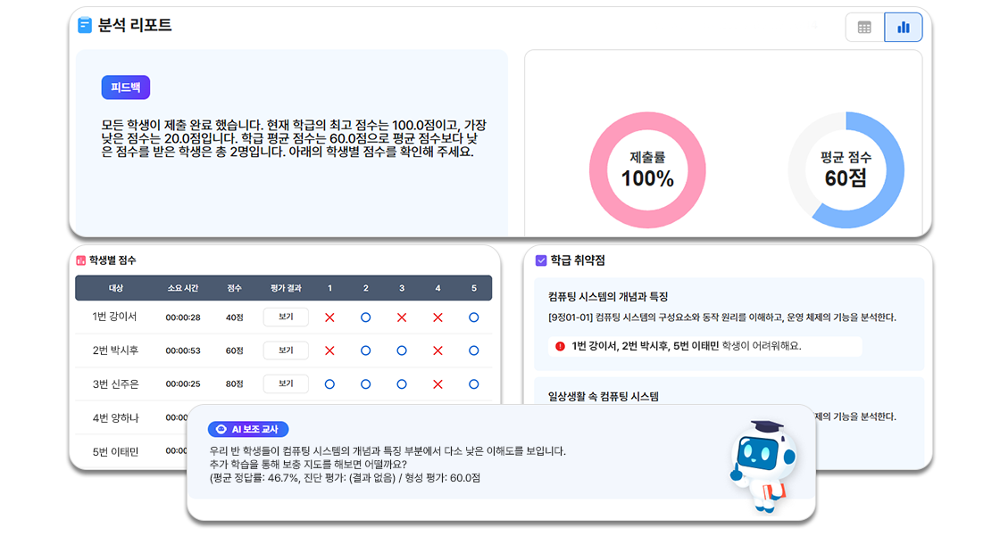
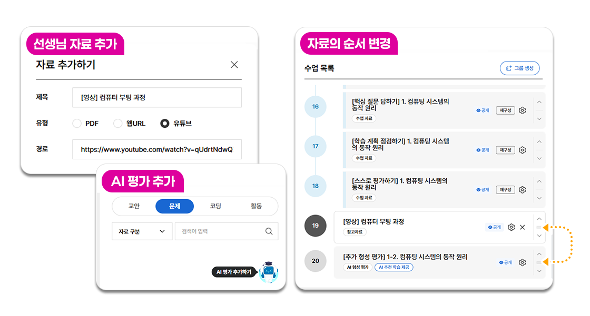
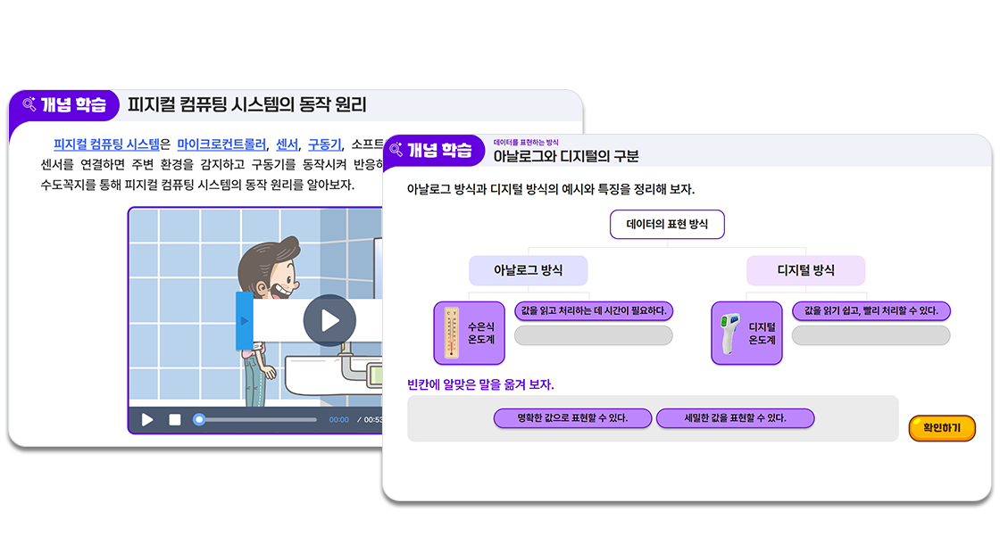
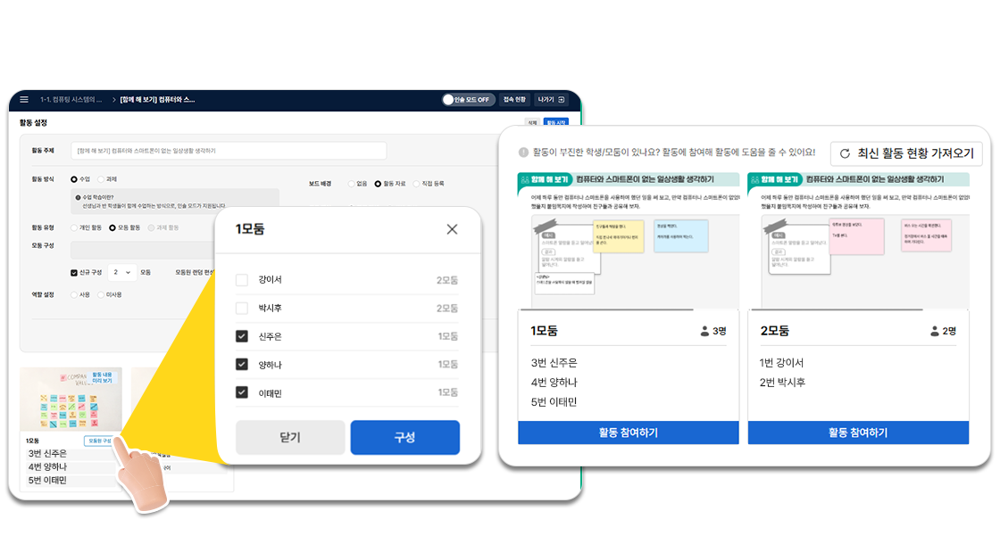
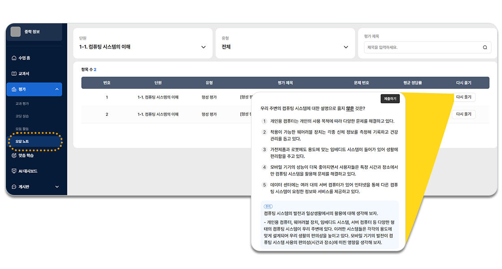

중학 정보 AI 교육자료 체험관
하나의 컴퓨터에서 서로 다른 브라우저를 사용하여
선생님과 학생 계정을 체험할 수 있습니다.
(예시: 선생님 - 크롬, 학생 - 엣지)
- 학급별 맞춤 코스웨어 제작 가능
- 자유로운 수업 재구성을 통해
우리 학급에 딱 맞는 맞춤형 코스웨어를 만들 수 있습니다.
- 다양한 수업 방식 지원
- 인솔 모드 ON/OFF를 통해
선생님 지도하에 진행하는 수업과 학생 자기 주도 학습이 모두 가능합니다.

- 선생님과 학생 간 상호 작용 수업 지원
- 실시간으로 학생들의 답변을 확인하면서
쌍방향 소통 수업이 가능합니다.
- 실습 자동 채점 기능 지원
- 실습 자동 채점 기능으로 학생들은 즉시 피드백을 받고,
선생님은 채점 업무 부담을 크게 줄일 수 있습니다.
- 학생들이 서로 협동하고 소통하는 모둠 활동 지원
- 모둠원 간 실시간으로 의견을 공유하며
협력적 소통 학습을 촉진하는 학습 환경을 제공합니다.
- 선생님용 저작 도구 제공
- 선생님이 직접 평가 및 실습 자료를 제작하고
코스웨어에 추가할 수 있습니다.
- AI 튜터
- 평가 및 활동 정보를 기반으로 장단점을 분석하여
학생들에게 피드백을 제공하고 콘텐츠를 추천합니다.

- 맞춤형 콘텐츠
- 평가 결과를 분석하여 학생의 학습 수준에 맞는
맞춤형 콘텐츠를 제공합니다.
- AI 챗봇
- 학습과 관련하여 궁금한 내용에 대한 답변,
평가 문항에 연계된 힌트 등을 실시간 제공합니다.

- AI 대시보드
- 평가 결과와 성취 수준 현황을 한눈에 파악할 수 있는 통계 그래프와
AI 분석 결과를 제공합니다.
- AI 보조교사
- 선생님에게 학급의 학습 결과를 분석한 정보를 제공하여
효과적으로 수업을 설계하는데 도움을 줍니다.

- AI 평가
- 발행사가 제공한 문제지 외에 동일 또는 수준별 문항으로
AI가 구성하는 시험지를 추가할 수 있습니다.

- 수업 재구성
- 발행사나 선생님이 제작한 자료를 추가 또는 삭제하거나
수업 의도에 맞게 순서를 변경하여 코스웨어를 재구성합니다.

- 진단 평가
- 단원 학습을 위해 필수적인 개념을 빠짐없이 알고 있는지 진단합니다.
- 진단 후 보충 학습
- 오답 문항과 연계되어 추천되는 보충 학습 콘텐츠를 통해 학습 결손을 예방합니다.
- 단원 도입
- 대단원 및 중단원 학습 내용 전반을 영상을 통해 소개하고
학생들이 작성한 학습 계획을 확인합니다.
- 소단원 도입
- 소단원 학습 목표를 제시하고 관련 영상을 통해 학습할 내용에 대한 흥미를 유발합니다.
- 개념 학습
- 텍스트, 동영상, 이미지, 조작형 등 다양한 유형의 콘텐츠를 통해
단원의 핵심 개념을 학습합니다.

- 모둠 활동
- 모둠원을 선택하여 모둠을 구성하고
학생들의 활동을 모니터링하거나 실시간으로 활동에 참여합니다.

- 실습 활동
- 학습한 개념을 활용하여 문제를 해결하는 코딩 실습을 진행하며,
선생님은 학생들의 화면을 실시간으로 확인하여 개별 맞춤 지도를 제공할 수 있습니다.
- 형성 평가
- 형성 평가를 통해 소단원 내용을 점검하고 학생의 성취 수준을 확인합니다.
- 수준별 맞춤 학습
- 형성 평가 결과를 바탕으로 느린 학습자, 보통 학습자, 빠른 학습자를 분류하고
그에 따른 맞춤형 학습을 진행합니다.
- 학습 목표 점검 및 자기 평가
- 학습 목표가 달성되었는지 학생 스스로 확인하고 점검합니다.
- 평가 관리
- 수업 중 실시한 평가 및 모둠 활동, 실습 활동의 결과를 확인하고,
필요시 추가 채점을 진행하거나 학생별 피드백을 기록합니다.
- AI 대시보드 확인
- 평가와 활동 결과를 통계화하여 시각화한 그래프와
AI의 종합 분석 결과를 확인합니다.
- 오답 노트 확인
- 학생들은 수업 중 실시한 평가의 오답 문항을 다시 풀어보며
학습 내용을 복습할 수 있습니다.

- AI 추천 학습
- AI가 추천한 학생별 맞춤형 학습 콘텐츠를 확인하고 스스로 학습할 수 있습니다.
- 대표 저자서태원
-
고려대학교 교수
-
- 강신천
- 국립공주대학교 교수
-
- 허희옥
- 국립순천대학교 교수
-
- 장병철
- 한양대학교 교수
-
- 이지항
- 상명대학교 교수
-
- 공선희
- 서울로봇고등학교
-
- 권순찬
- 서울충암중학교
-
- 김경규
- 포항제철중학교
-
- 김민기
- 선린인터넷고등학교
-
- 김희원
- 백령중학교
-
- 박정호
- 세종고운고등학교
-
- 박지훈
- 대전과학고등학교
-
- 서미란
- 보라고등학교
-
- 양설믜
- 서울문화고등학교
-
- 유경선
- 남서울대학교 겸임교수
-
- 윤수연
- 남양주진접중학교
-
- 이동윤
- 광주과학고등학교
-
- 이현아
- 세종과학예술영재학교
-
- 이혜림
- 서울구암중학교
-
- 정성은
- 경인고등학교
-
- 정은영
- 서울구일고등학교
-
- 정종호
- 대전둔원중학교
-
- 정한결
- 내곡중학교
-
- 최용운
- 싱가포르한국국제학교
-
- 현영숙
- 이순신고등학교